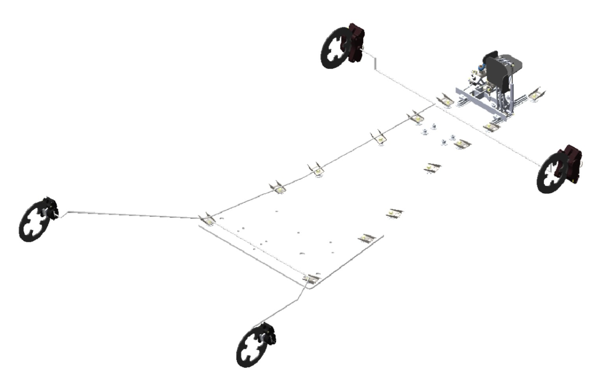
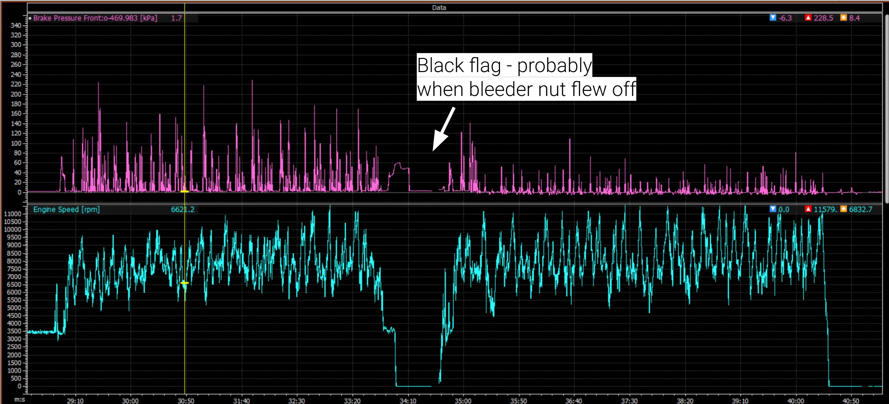

As Brakes and Driver Interface (BDI) Lead, I led the design, analysis, and manufacturing of the full brake system for Berkeley Formula Racing’s B23 car. This included rotors, calipers+brake pads, brake bias adjustment, hydraulic system (brake lines, master cylinders, fluid resevoirs, pressure transducers, etc). The system required balancing performance, reliability, manufacturability, and strict FSAE safety constraints. Work included design and modeling, FEA and structural analysis, thermal simulations, physical testing, and manufacturing. Some of the projects listed below were owned/worked on by other BDI members (ownership and my contributions will be noted in these cases).

The B23 vehicle was the team’s first fully designed car since COVID-19, which meant there was little to no documentation and knowledge transfer from previous years. As a result, the brake system had to be developed from the ground up, including design decisions and processes, validation methods, and manufacturing processes.
The system was designed to improve braking consistency, reduce weight, and enhance driver control. Key improvements included adding driver brake bias control for the first time, developing rotor simulation processes, creating a more accurate prake performance matlab script for component selection, and better packaging within the rest of the car (chasssis and wheel shells).
During Endurance at competition, the B22 vehicle was unable to finish due to sudden loss of brake pressure. The failure occurred after the vehicle received a black flag, resulting in the driver applying a high braking load while entering the pits.
Hydraulic pressure data collected during the endurance run was critical in distinguishing between leakage and performance degradation. The brake pressure data showed a clear drop in front brake pressure immediately after the black flag event, corresponding to when engine RPM dropped to zero. This indicated a loss of pressure in the front braking circuit rather than a gradual degradation due to thermal effects or pad wear.
Part inspection revealed that the bleeder screw on the front-right caliper had was mising. The component was not recovered, but inspection of the caliper showed that the threads remained intact and the caliper functioned normally after installing a replacement screw. It was noted that failure was localized to a single mechanical component rather than a system-wide issue. The most likely failure mode was mechanical wear of the bleeder screw due to repeated tightening and loosening during brake bleeding procedures throughout testing. Over time, this likely reduced the effective thread engagement or compromised the structural integrity of the screw.
Under normal operation, the component remained secure; however, the high transient load introduced when the driver aggressively applied the brakes during the black flag event likely exceeded the remaining strength of the worn component, causing it to fly off the caliper and resulted in an immediate loss of hydraulic pressure in the front circuit.
This failure highlighted the importance of not only designing robust systems, but also implementing structured maintenance, inspection, and validation procedures to ensure reliability under competition conditions.
Comp Front Brake Pressure Data:

changes in brake script here. credit ezra.
credit liam
credit brandon
tested different options that worked with packaging with brake script
shell clearance and packaging (mention that the edges of the calipers had to be ground down in previous year)
pressure transducer mounts
Design for Manufacturing (DFM) • CAD (SolidWorks) • Structural analysis (FEA, hand calculations) • Manufacturing • Failure analysis
Email: jennifersili@berkeley.edu
LinkedIn: linkedin.com/in/jennifersili